In-Class Excerise 7
In Class Notes
Map and Geographical Data
- When working on geographical data, understand the data and utilize the most appropriate geometry.
Coordinates System
Geographic coordinates system are in decimal places and is useful in providing precise location. However, it is not ideal for measuring distance
Projected coordinates system has advantage that lengths (in meters), angles, and areas are constant across the two dimensions.
Qualitative Thematic Map
Use of different shapes, hue, arrangement and orientation for different representation
For colour, values refers to different tones of grey. Saturation refers to same colour with different intensity. For different quantities, different saturation of the same colour can be used. Alternatively, different sizes can also meet the same intent.
Proportional Symbol Map
Understanding how to size the circles: we should not double the diameter of the circles when the value is doubled but instead, we should double the area (increase in size is much smaller = misleading)
Area representation should be consistent (e.g. we should not compare states of America against other countries as a whole).
Bricks map (wafer map in R) is an alternative method for proportional symbol map
Choropleth Map
- Should not be confused with heatmap
Unclassified choropleth map have a smooth, continuous gradient
Map visualisation is affected by the number of classes as well as the method of classification used.
Equal interval means that each class/bin has the same range
Quantitle means each class have the same number of observations
Should avoid multiple colours because it misleads the reader easily
Geofacet
Positions the graphs at their relative location
Have to manually design the grid based on the map location
In Class Exercise (SG Pools)
.shp file is the commonly used data file format for geospatial data (cannot be used alone)
.kml is another commonly used data file format as well
.geojson file is readable by notepad but it is not easily edittable
Adding details to the map by using details
- Adding name to detail to bring out the Singapore map (better method than
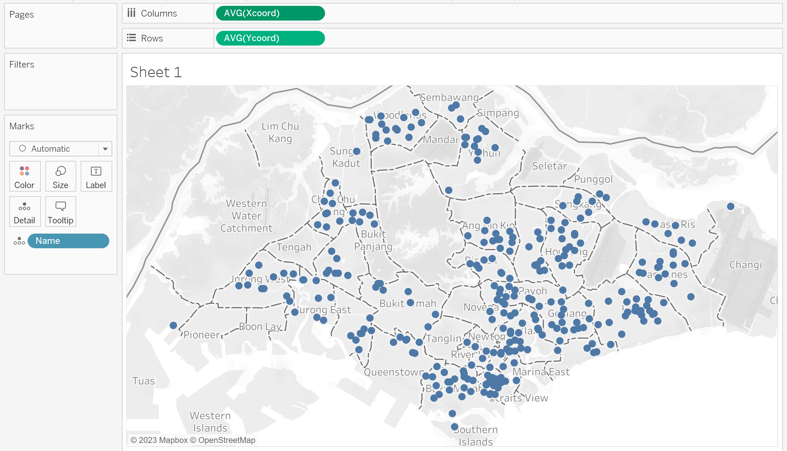
Creating a calculated field to rename 0 and 1 to Branch and Outlet
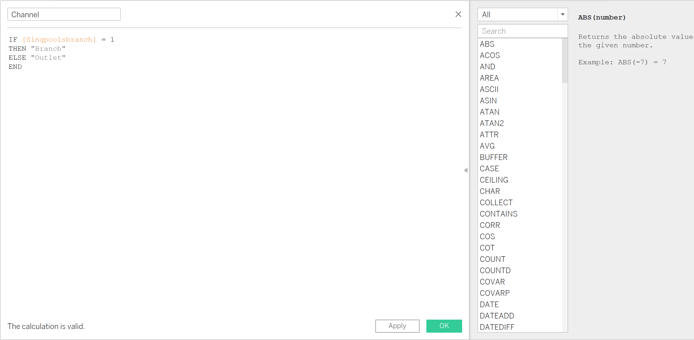
Adding the channel to colours to enable more differentiation
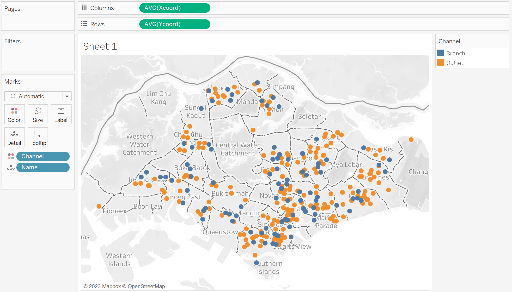
Adding Gp1Gp2Winn to see which are the popular outlets/branches
- Changing size, reducing opactity and adding border to improve visualisation
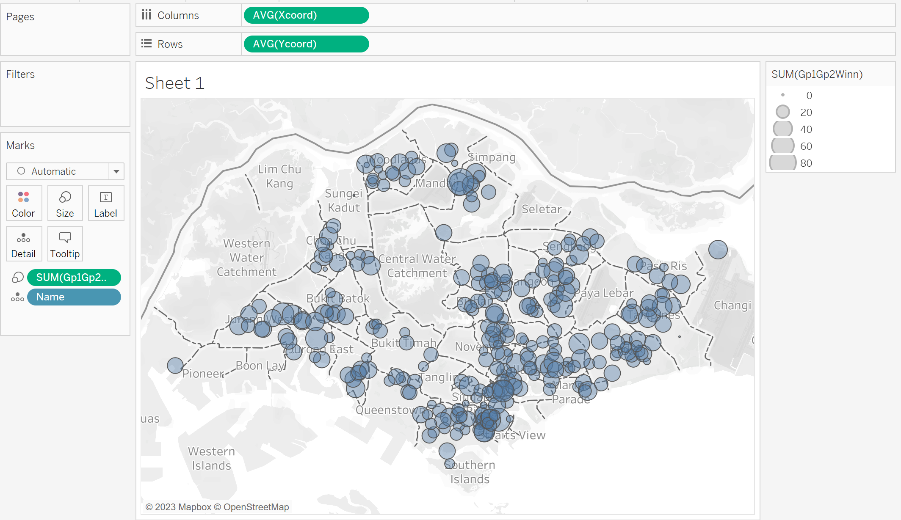
Editting tooltip to show useful info
- Xcoord and Ycoord are removed
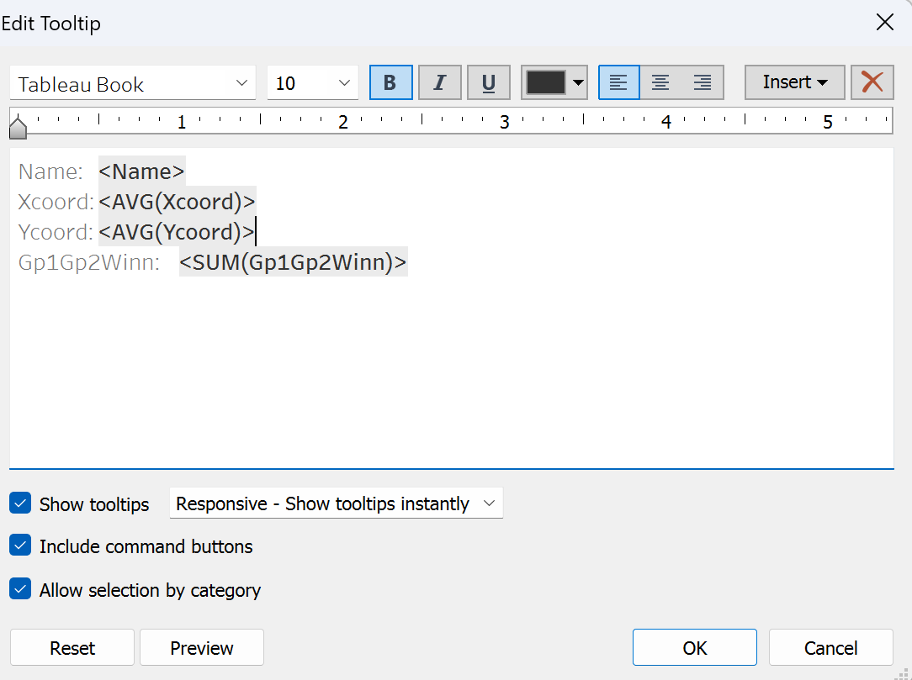
Final visualisation for SGPools outlets with winning rates:
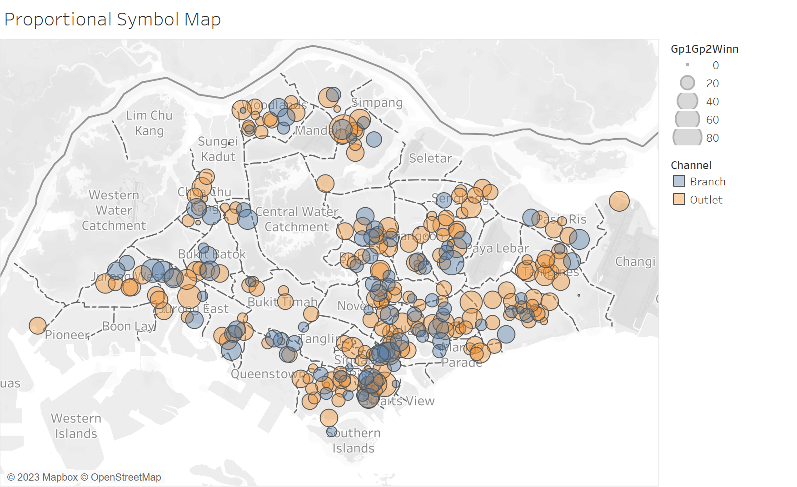
In Class Exercise (Realis)
For this exercise, we will use the csv file titled “ResidentialTransaction20220826195250”.
We will first remove the existing file that appear on the screen.
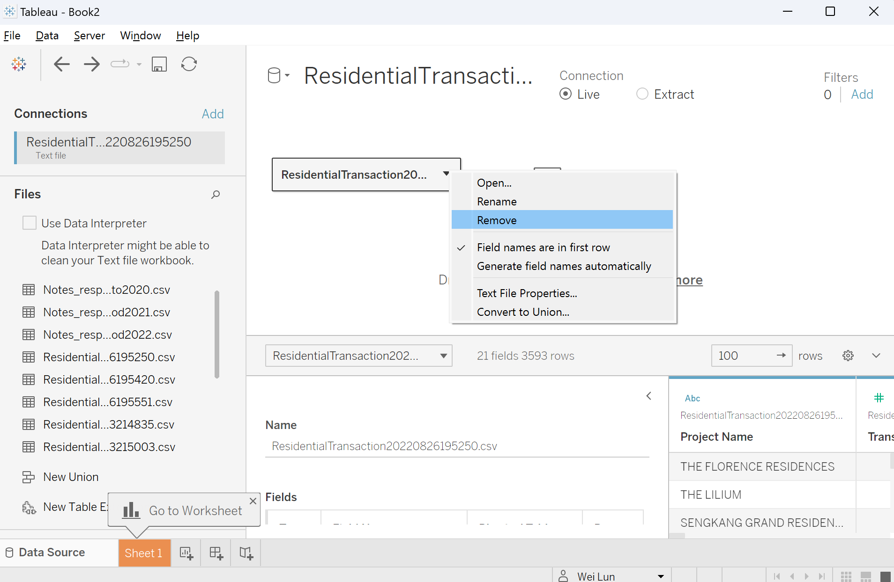
Next, we will select the six residential files and drag them into create table. this allows Tableau to auto merge all the six tables on its own.
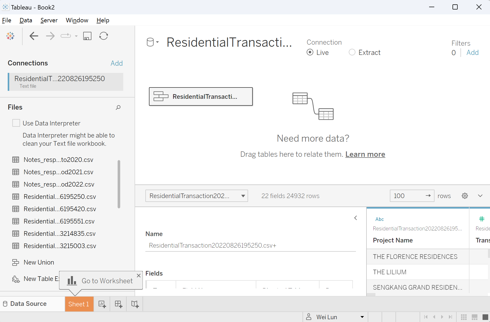
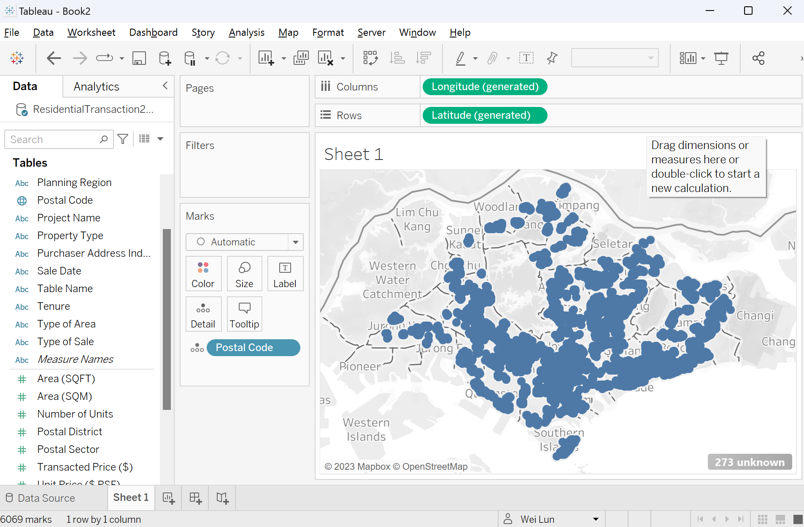
Adding more details to the charts: Project name, Number of units sold, and Sold price. Also adding filter for property type. Pin the map so the visualisation does not change when changing different filter which can be distracting for the readers.
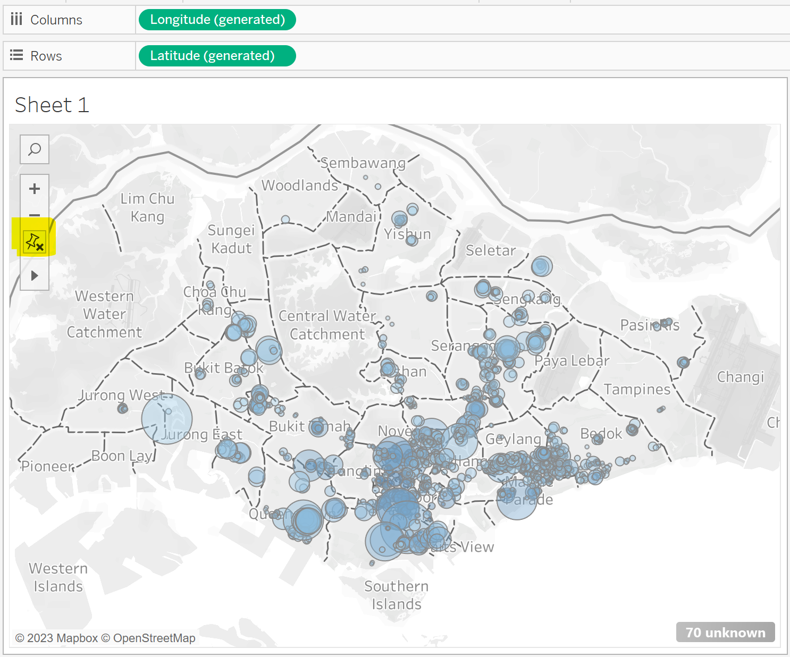
Final visualisation for Property Resale Price in Singapore:
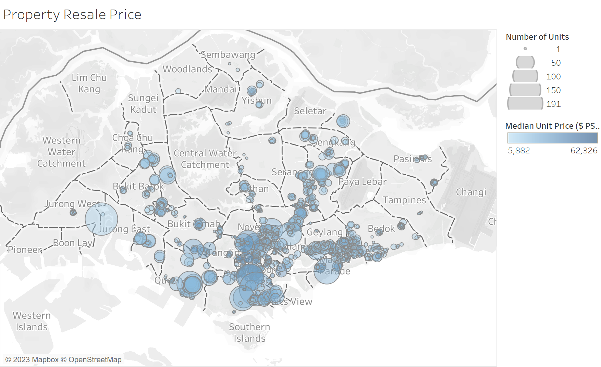
In Class Exercise (Geospatial)
We can make use of data.gov.sg to find geospatial data of Singapore
We will be adding the files ‘respopagesextod2022’ and ‘master-plan-2019-subzone-boundary-no-sea-geojson’ for this exercise. Join using the
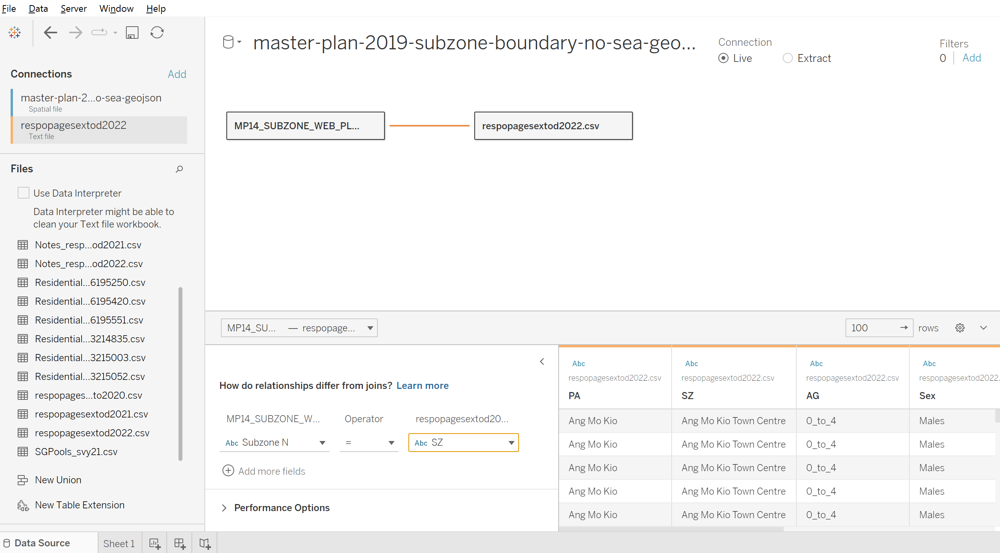
If the subzone naming is not corrected, there would not be any differentiation in the map. This is because the naming mismatch due to case sensitive. We will resolve this by going to the data source type and change the naming of subzone using formula.
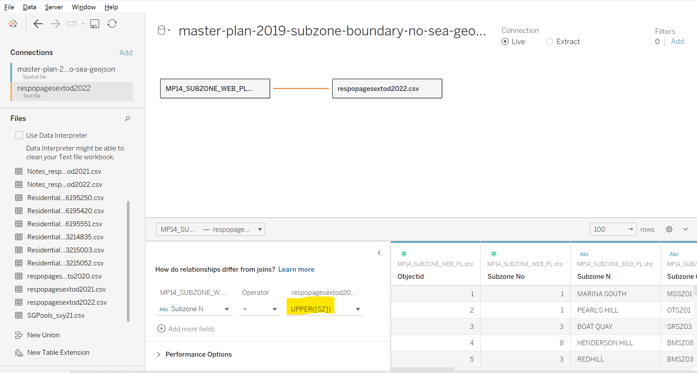
Increasing the population size classification by double clicking on the legend. Increase the number of steps to the desired number (in this case, we choose 10).
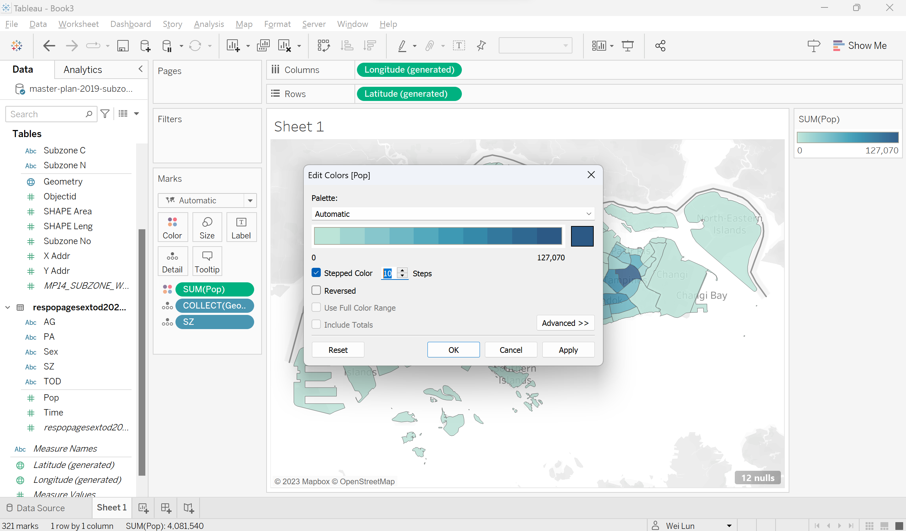
The final visualisation for Population size in Singapore:
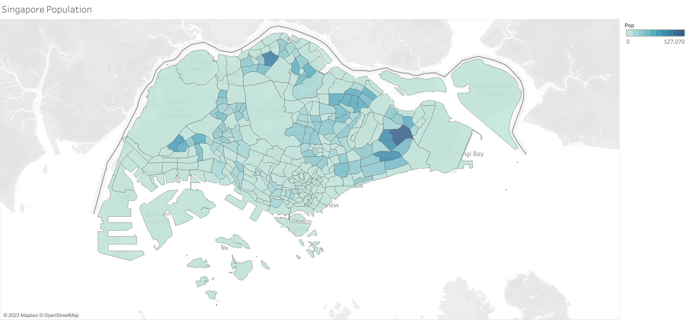